Micro-Ionic organic plant growth boosters, mineral soil conditioners, and professional farm management services based in Johnsonville, Kpanjah Community.
Official price list for sachets, cans, and full bulk boxes
Micro-Ionic Plant Growth Booster
Powered by micro-ionic innovation (5x smaller than nano), 4Tree penetrates leaves, stems, and roots within 1 minute. Formulated from natural humic, phenolic, citric, and amino acids.
Concentrated Organic Yield Booster
A high-potency liquid formulation designed for fast crop recovery, enhanced flowering, and stress resistance against heat and drought conditions.
Organic Soil Amendment & Detoxifier
Enriched with natural minerals including Zeolite, Pumice, Perlite, and Seaweed extracts. Rapidly remediates degraded, acidic, or chemically damaged soil.
Expert field management and consulting for smallholders and commercial farms
Expert diagnostic assessments, soil evaluation, and custom crop strategy planning tailored to your land's specific conditions.
Precision planning for irrigation pathways, row spacing, sunlight exposure, and acreage utilization for maximum efficiency.
End-to-end maintenance programs for both vegetable gardens and tree crop plantations (cocoa, coconut, fruit trees).
One-on-one guidance on pest management, seasonal planting schedules, yield enhancement, and operational cost reduction.
Recommended spray ratios per 20L knapsack sprayer
| Crop Category | 4Tree Dosage (per 20L Water) | Application Frequency |
|---|---|---|
| Vegetables & Peppers | 1/2 Spoon | Every 7–10 days |
| Corn (Maize) & Field Crops | 1 Level Spoon | Every 15 days (Day 15, 30, 45) |
| Rice (Paddy) | 1 Level Spoon | Day 21–35, Day 45–55 & Flowering |
| Cassava & Tubers | 1 Level Spoon | Day 15, Day 50, Day 90 |
| Tree Crops (Cocoa, Coconuts, Fruits) | 1 Level Spoon | Every 15 days (Avoid full bloom stage) |
Real results from farms using 4Tree and 4Soil
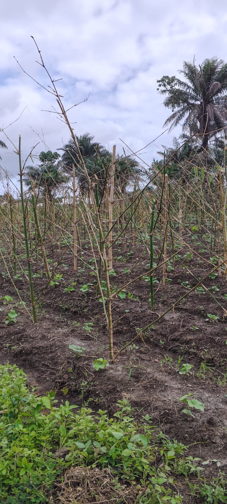
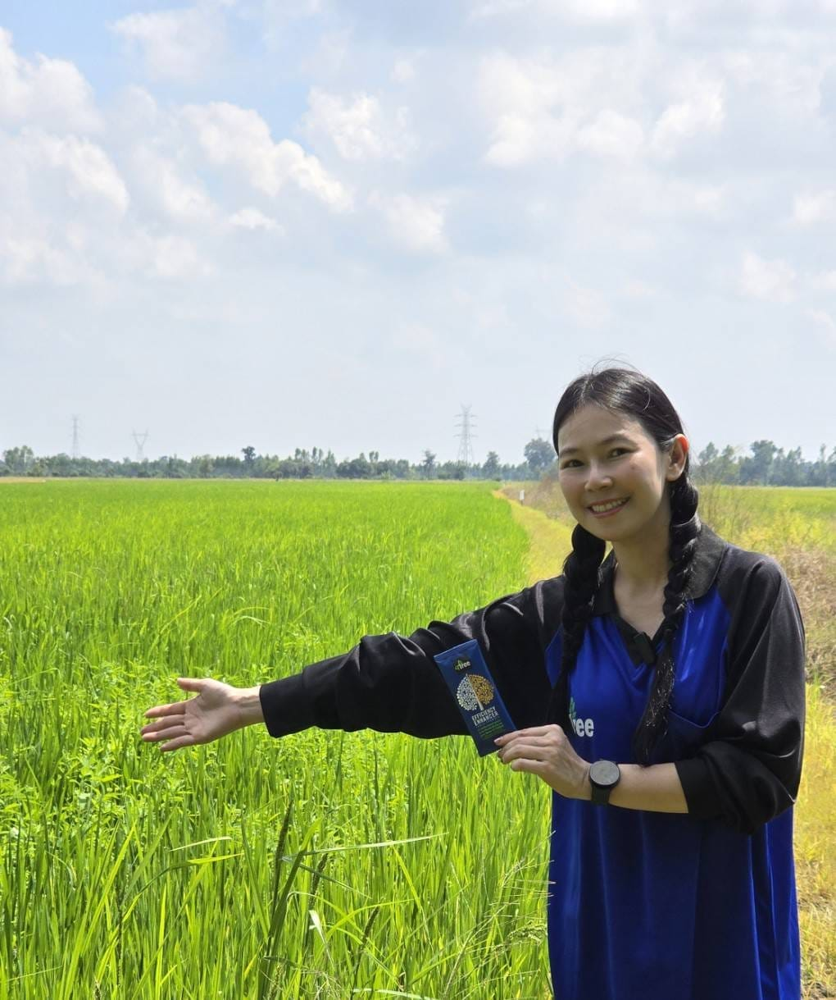
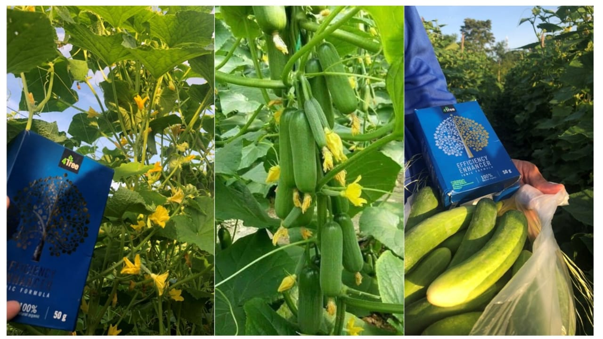
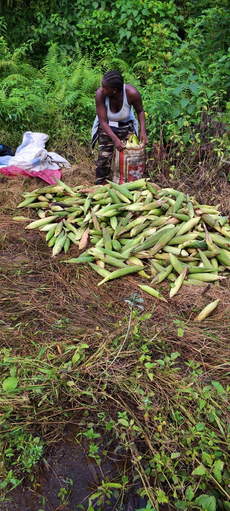
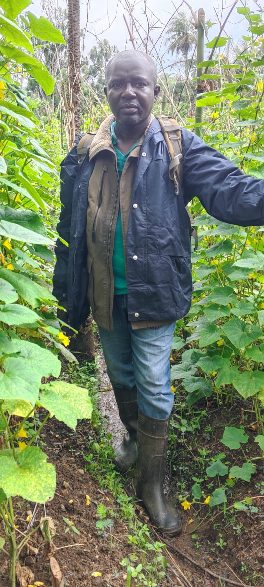
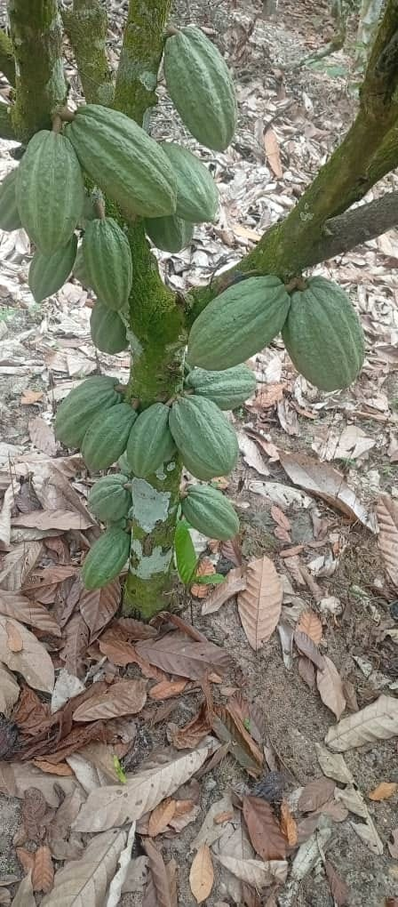
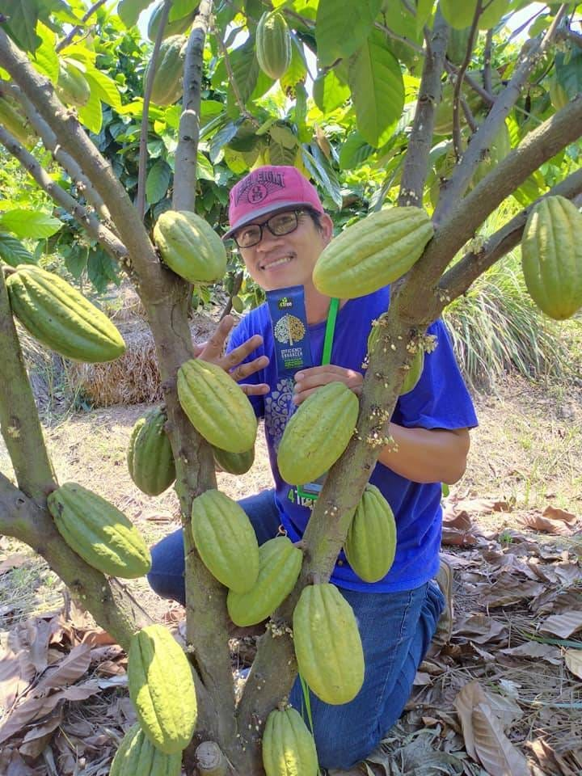
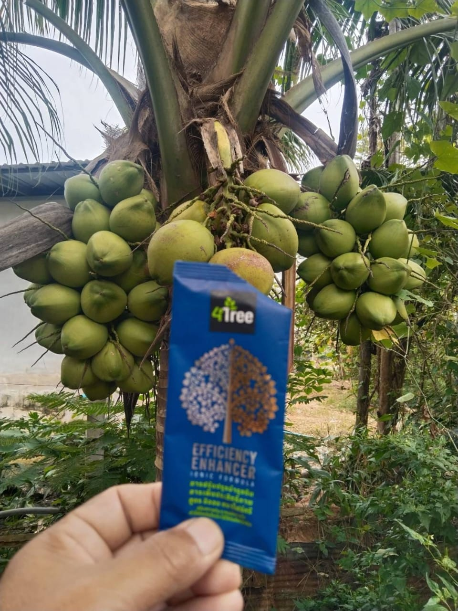
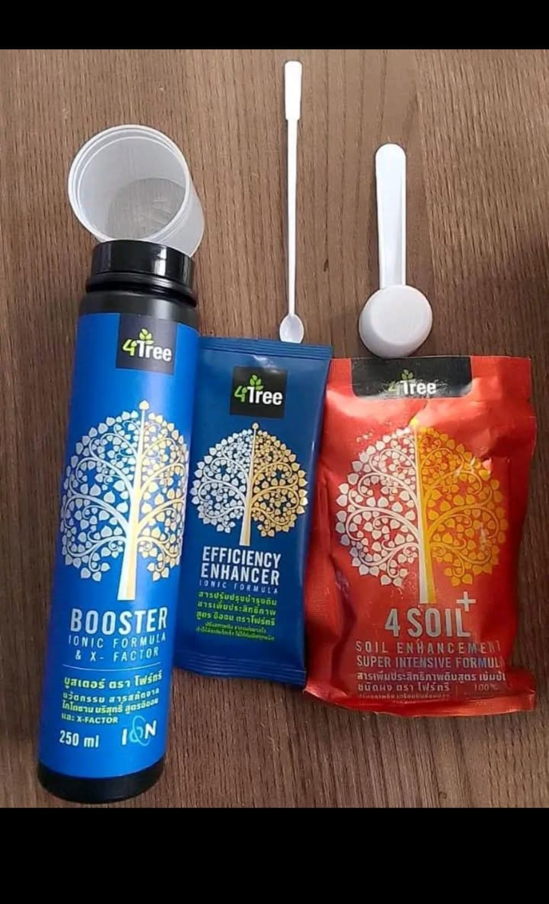
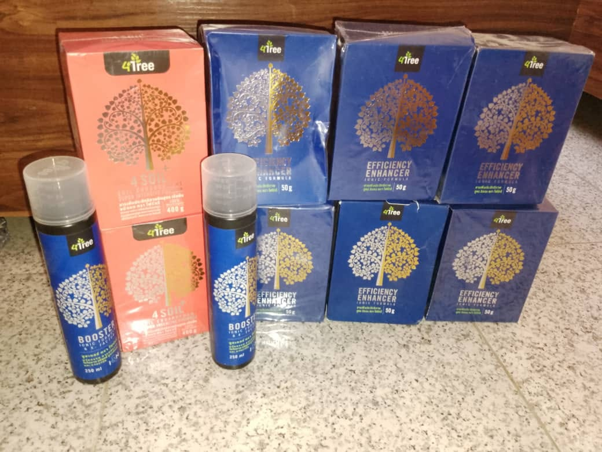
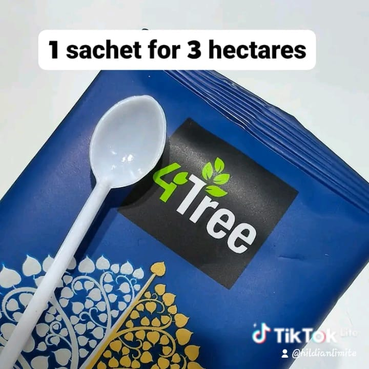
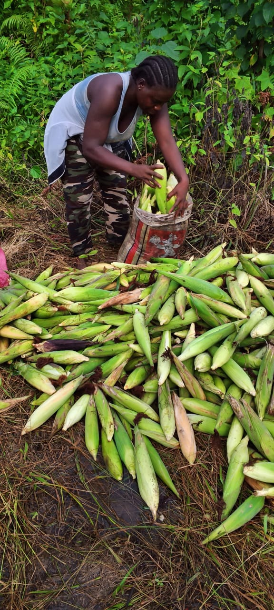
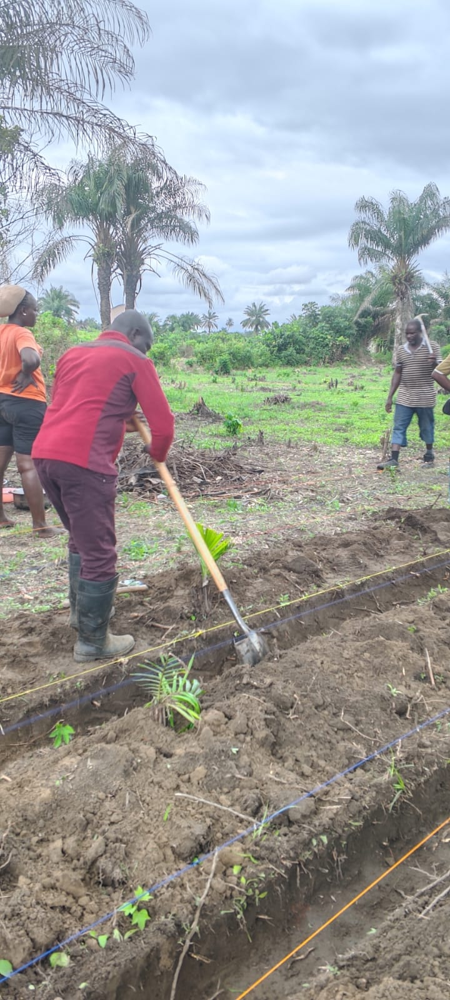
Location: Johnsonville, Kpanjah Community
Contact us to buy 4Tree & 4Soil products, or to book a farm layout and consultation session.
Connect on WhatsApp (+231 880 461 527)